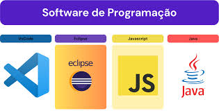

O que é um software?
Um software é um conjunto de instruções e programas que indicam a um computador ou outro dispositivo como realizar tarefas específicas, sendo a parte não física (lógica) de um sistema, em contraste com o hardware (a parte física).
O que é um sistema operacional?

Um sistema operacional (SO) é um software essencial que atua como um intermediário entre o hardware (componentes físicos do dispositivo) e os programas que você usa.
O que é uma licença de software?
Uma licença de software é um contrato legal entre o criador do software e o utilizador, que define as condições e permissões para usar, copiar, modificar e distribuir um programa.
O que é um Software Licenciado?
Um software licenciado é um programa cujo uso é regulamentado por um contrato de licença, que confere ao usuário os direitos legais de utilizá-lo, mas também estabelece termos e condições de uso, que podem incluir restrições, obrigações e suporte técnico.
O que é um Software livre?

Um software livre é um programa que respeita a liberdade do utilizador, conferindo-lhe quatro liberdades essenciais: a de executar o programa para qualquer fim, a de estudar como ele funciona e modificá-lo (o que requer acesso ao código-fonte), a de redistribuir cópias para ajudar outras pessoas, e a de melhorar o programa e partilhar essas melhorias com a comunidade.
O que é um Software Proprietário?

Software proprietário, também conhecido como de código fechado, é um software desenvolvido e comercializado por uma empresa que detém os direitos exclusivos sobre o código-fonte, o que limita a liberdade do utilizador de copiar, distribuir, estudar ou modificar o software, exigindo o pagamento de uma licença de uso e permissão para qualquer uso que vá além do estipulado nos termos de licença.
O que é um software de Sistema?
conjunto de programas informáticos que gere o hardware de um computador, permitindo o funcionamento de outros programas e a interação entre o utilizador e os componentes físicos do dispositivo.
O que é um software Aplicativo?
Um software aplicativo, ou simplesmente aplicativo/app, é um programa de computador projetado para executar tarefas específicas para o usuário final, diferentemente do software de sistema, que é responsável por operar o próprio computador.
O que é um software de Programação?
Software de programação é um conjunto de ferramentas e programas que os desenvolvedores usam para criar outros softwares, como aplicativos, sistemas e websites.
O que é um software de diagnóstico de software ?
Um software de diagnóstico de software é uma ferramenta que analisa, identifica e relata problemas, falhas ou vulnerabilidades em outros sistemas de software, hardware ou uma combinação de ambos.